KML – Chapter Fifteen
...................
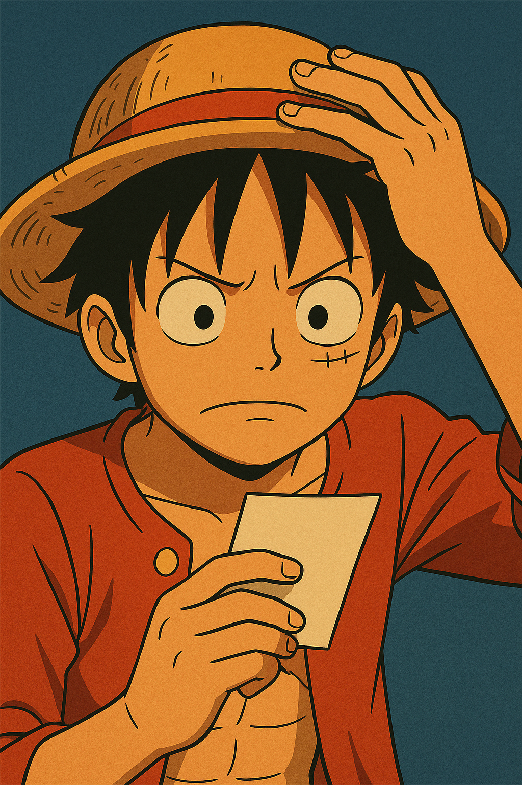
A child sits under the roof of a schoolhouse, where knowledge falls like snowflakes onto open hands.
⺍ (small) + 冖 (roof) + 子 (child)
On: ガク ・ Kun: まな(ぶ)
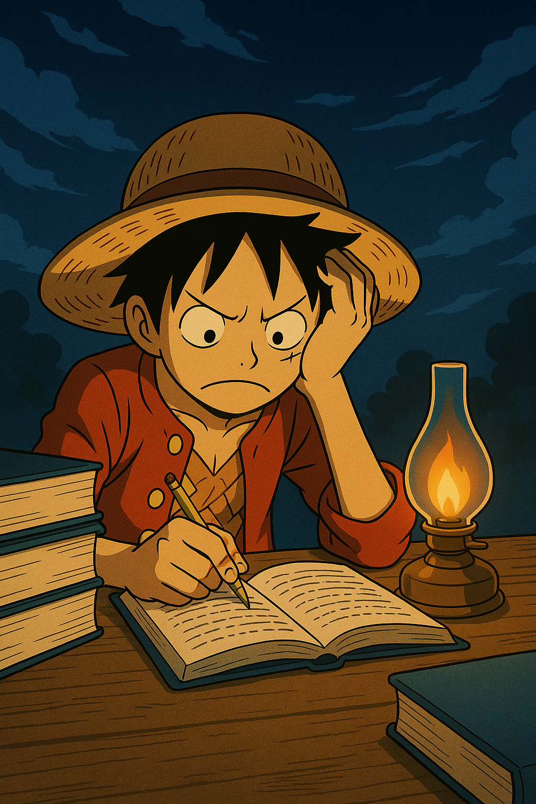
An eye suddenly awakens under the school’s roof—what was studied becomes remembered in a flash of awareness.
見 (see) + 冖 (roof) + ⺍ (small)
On: カク ・ Kun: おぼ(える), さ(ます)
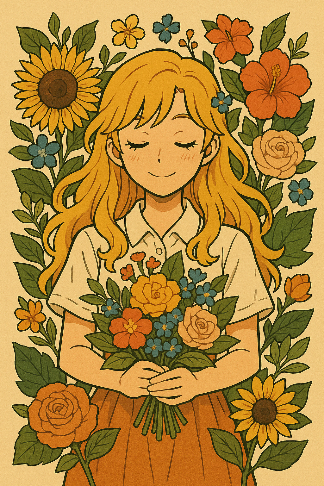
A tree crowned with glory sparkles like fire. In the sun’s blessing, it flourishes with life and brilliance.
木 (tree) + 火 (fire or radiance)
On: エイ ・ Kun: さか(える), は(える)
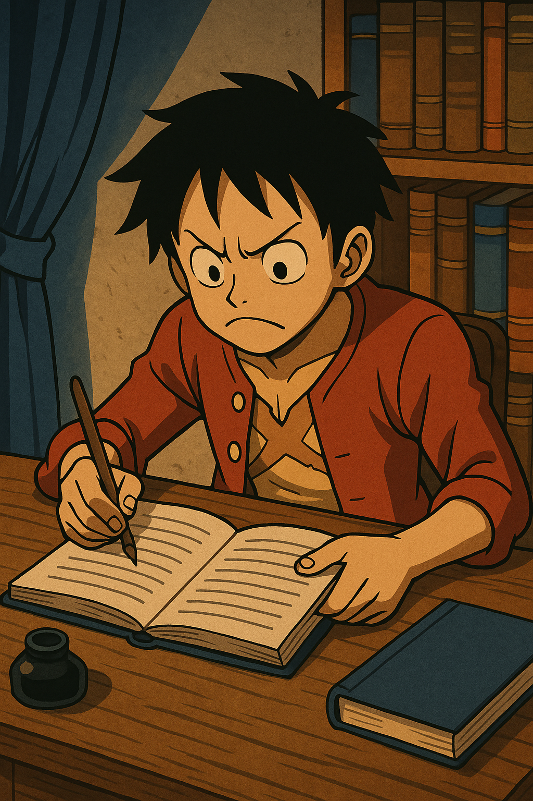
A hand holds a brush beneath the sun, carefully writing sacred words across a scroll of time.
聿 (brush) + 日 (sun)
On: ショ ・ Kun: か(く)
By the flowing water, people gather at a peaceful haven—a port where boats rest and journeys begin.
氵 (water) + 聿 (brush or writing)
On: シン ・ Kun: つ
A herder uses a stick to guide the cows gently—breeding not just animals, but a peaceful rhythm of life.
牛 (cow) + 攴 (strike/guiding hand)
On: ボク ・ Kun: まき
With a tool in hand and intent in heart, the warrior advances—aggression begins with a strike.
工 (tool) + 攵 (strike)
On: コウ ・ Kun: せ(める)
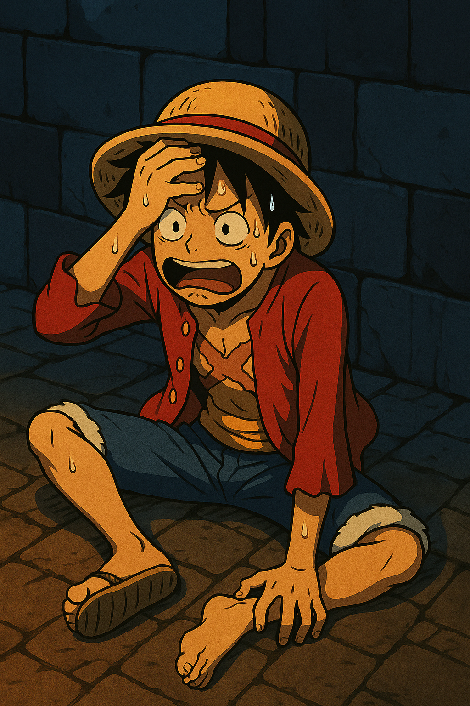
A shell cracks under pressure—what was once armor becomes a symbol of failure in battle.
貝 (shell/money) + 攵 (strike)
On: ハイ ・ Kun: やぶ(れる)
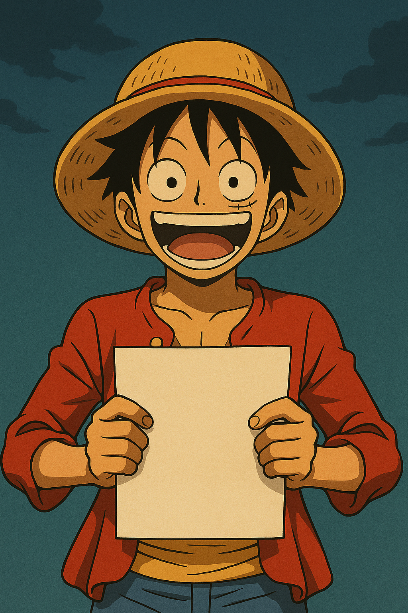
A tree becomes a sheet—each page, once part of a living forest, now holds a single story.
木 (tree) + 攴 (strike/number marker)
On: マイ
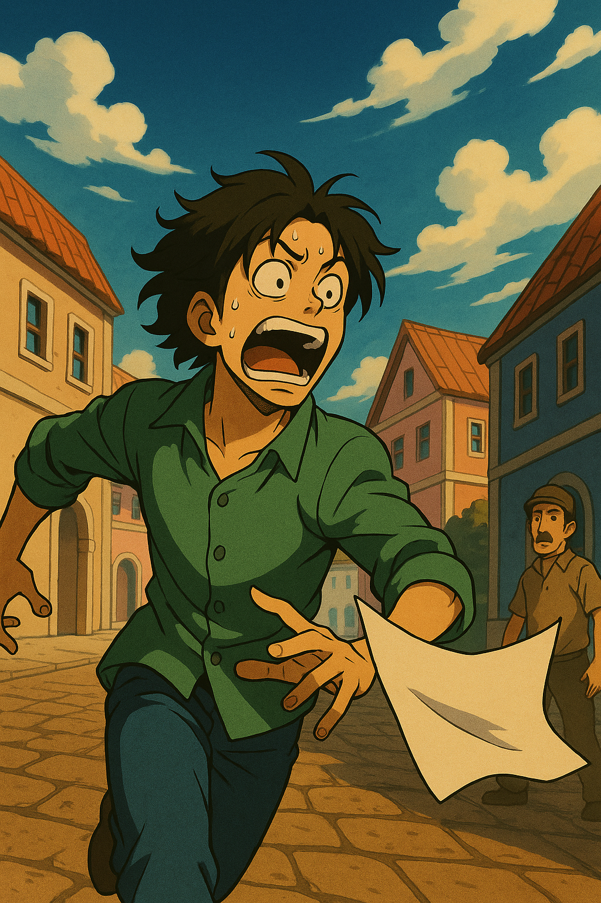
An old event, struck into memory, returns by happenstance—what once caused sorrow becomes history.
古 (old) + 攵 (strike)
On: コ ・ Kun: ゆえ
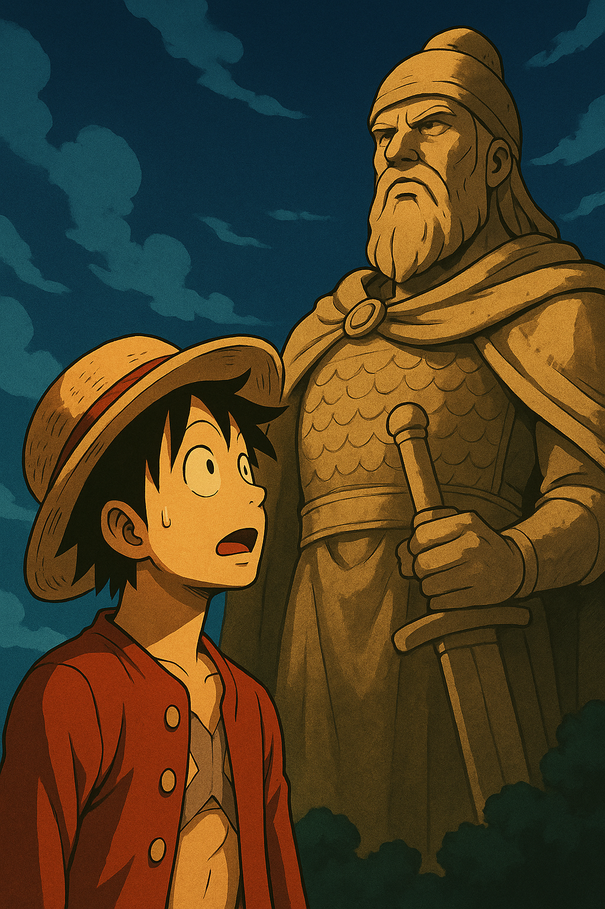
With hands clasped and back straight, one approaches in reverence. True awe is born not of fear, but of deep respect.
苟 (carefully) + 攵 (strike/act)
On: ケイ ・ Kun: うやま(う)
From a single open mouth comes a ripple of sound—what we say begins with breath and ends with meaning.
言 (speech radical itself)
On: ゲン・ゴン ・ Kun: い(う), こと
A voice calls out a warning, urging caution before action. To admonish is to love with urgency.
敬 (awe/respect) + 言 (speech)
On: ケイ
With a clever tongue and a counting tool, the plan takes form—plotting is where words meet numbers.
言 (speech) + 十 (ten)
On: ケイ ・ Kun: はか(る)
Through speech, the matter is clarified—like light seeping into a dark room, words elucidate the truth.
言 (speech) + 全 (complete)
On: セン
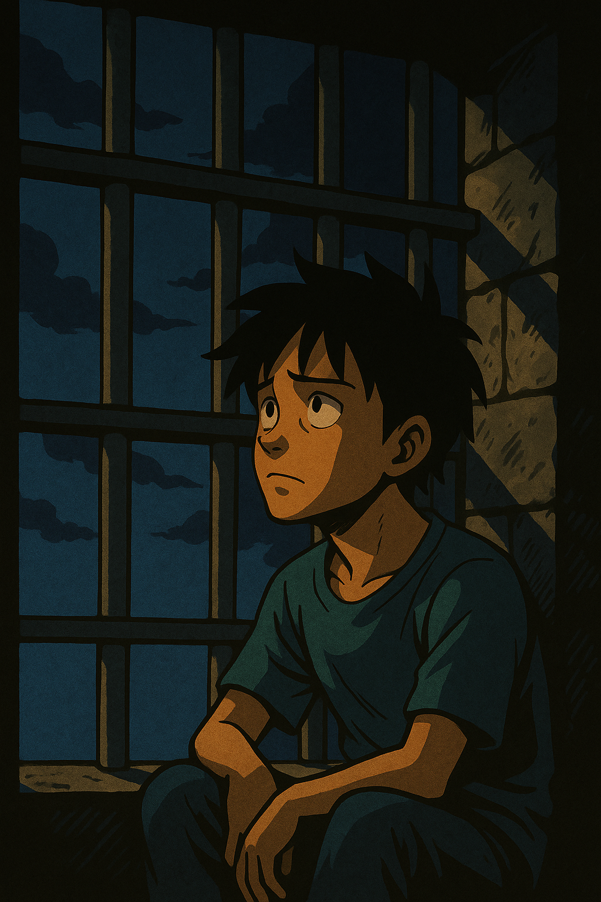
Beasts behind bars, words twisted into accusations—prison becomes the cage where truth and judgment collide.
⺨ (beast) + 言 (speech) + 犬 (dog)
On: ゴク
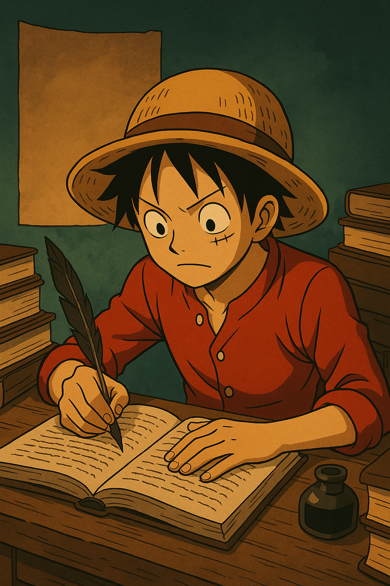
Words are reshaped with careful precision—like a chisel against stone, to revise is to perfect.
言 (speech) + 丁 (nail, exact)
On: テイ
A quiet word carried by the wind—news of a passing written with dignity and grief.
言 (speech) + 卜 (divine/sign)
On: フ
With sharp words like arrows, justice is delivered—chastising is not cruelty, but a sword of truth.
言 (speech) + 寸 (hand/measure)
On: トウ ・ Kun: う(つ)
Spoken words passed from teacher to pupil—a breath becomes instruction, shaping the mind like clay.
言 (speech) + 川 (stream/flow)
On: クン ・ Kun: おし(える)<
From the emperor’s lips, a command flows like silk—an imperial edict wrapped in solemn words.
言 (speech) + 召 (summon)
On: ショウ
Words jammed tightly together, no space to breathe—packed like emotions before they erupt.
言 (speech) + 吉 (good fortune, compressed)
On: キツ ・ Kun: つ(める), つ(まる)
A mouth weaves a tale as threads of language stretch into the evening—every tale begins with a single word.
言 (speech) + 舌 (tongue)
On: ワ ・ Kun: はな(す), はなし
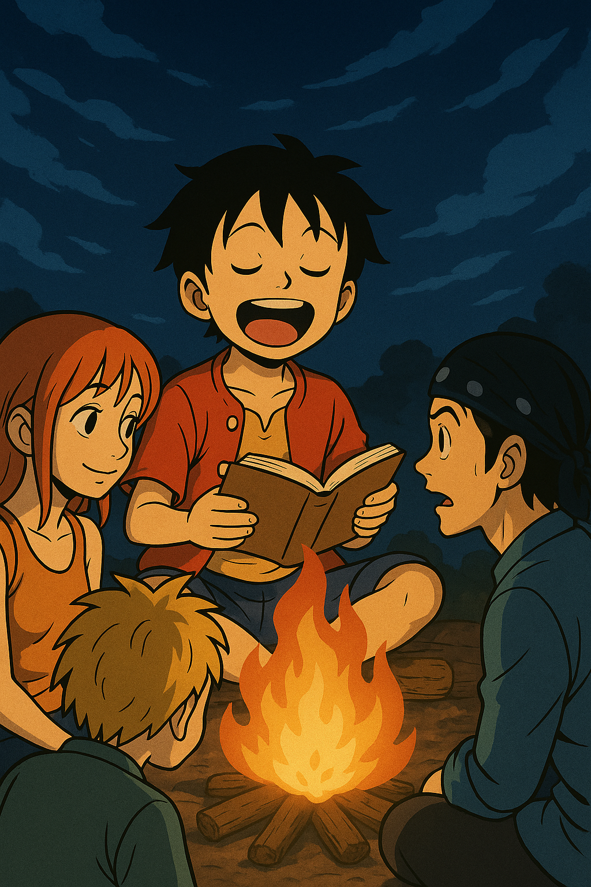
A poem is lifted into the wind—recitation is not reading, but releasing meaning into the air.
言 (speech) + 永 (eternal)
On: エイ ・ Kun: よ(む)
Within the heart of a temple, words become sacred rhythms—a poem carved in silence and soul.
言 (speech) + 寺 (temple)
On: シ
A word bridges nations and hearts—crafted from speech and a storyteller’s dance between languages.
言 (speech) + 吾 (I, self)
On: ゴ ・ Kun: かた(る), かた(らう)
Eyes trace the silent river of speech—reading is listening to the page with your mind’s ear.
言 (speech) + 売 (sell)
On: ドク・トク・トウ ・ Kun: よ(む)
Words align like notes on a scale—when speech is in harmony, even silence becomes part of the tune.
言 (speech) + 周 (surround/go around)
On: チョウ ・ Kun: しら(べる), ととの(う)
Discussion begins where words gather—not for argument, but for understanding between hearts.
言 (speech) + 炎 (flame)
On: ダン
A quiet yes. A nod in words. Consent is the invisible bridge built when trust meets language.
言 (speech) + 若 (young)
On: ダク
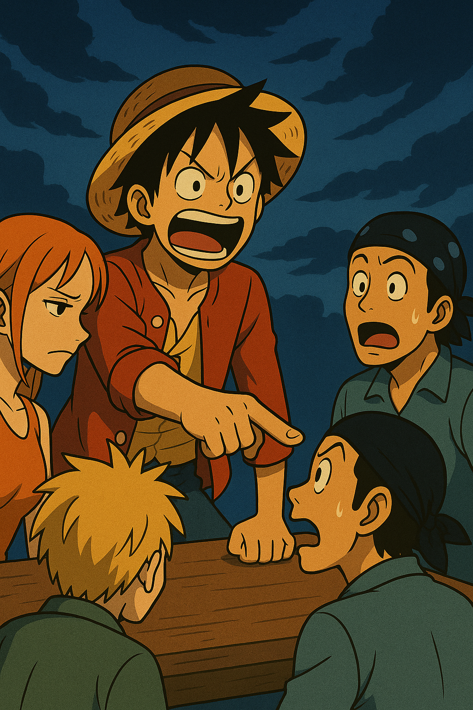
A rebuke is not rage—it’s the voice of wisdom correcting with clarity, guiding the lost back into the light.
言 (speech) + 兪 (agree/consent)
On: ユ ・ Kun: さと(す)
f